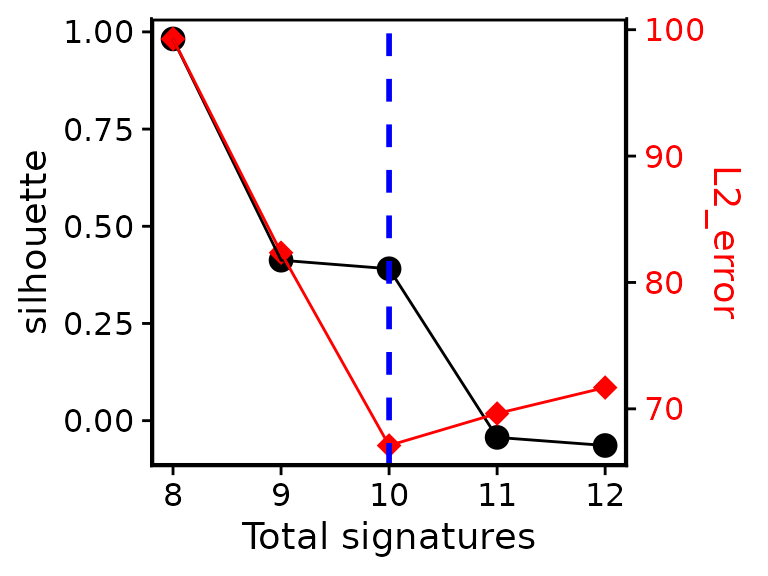
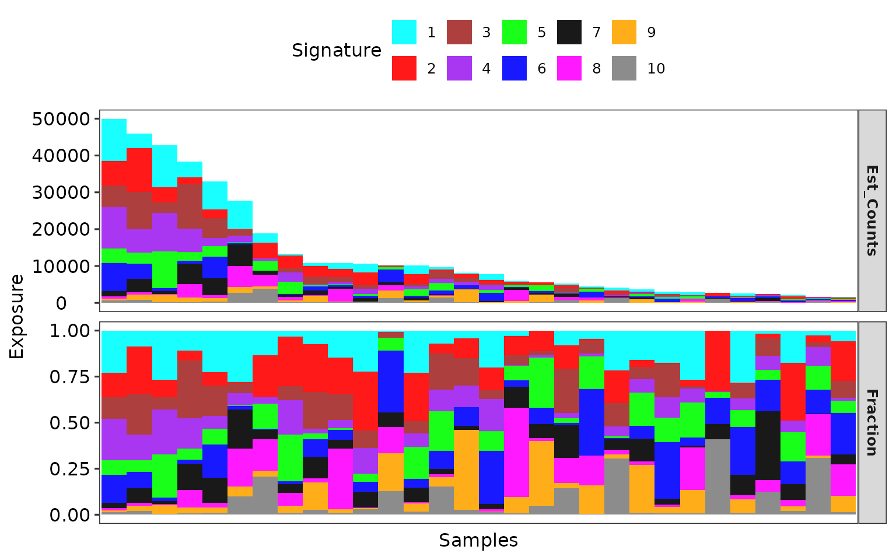

vignettes/sigminer.Rmd
sigminer.RmdAssume you have already gotten a catalog matrix (sample-by-component) like below:
library(sigminer)
#> Registered S3 method overwritten by 'sigminer':
#> method from
#> print.bytes Rcpp
#> sigminer version 2.3.2
#> - Star me at https://github.com/ShixiangWang/sigminer
#> - Run hello() to see usage and citation.
data("simulated_catalogs")
mat <- t(simulated_catalogs$set1)
mat[1:5, 1:5]
#> A[C>A]A A[C>A]C A[C>A]G A[C>A]T C[C>A]A
#> Sample_1 911 761 88 744 883
#> Sample_2 195 175 19 174 225
#> Sample_3 95 51 12 55 142
#> Sample_4 131 71 14 77 170
#> Sample_5 33 10 2 14 55Extract signatures with:
# Here I reduce the values for n_bootstrap and n_nmf_run for reducing the run time. In practice,
# you should keep default or increase the values for better estimation. The input data here is
# simulated from 10 mutational signatures
e1 <- bp_extract_signatures(mat, range = 8:12, n_bootstrap = 5, n_nmf_run = 10)Check which signature number is proper:
bp_show_survey2(e1, highlight = 10)
#> Variables can be used: signature_number, silhouette, sample_cosine_distance, L1_error, L2_error, exposure_positive_correlation, signature_similarity_within_cluster, signature_similarity_across_cluster, silhouette_sample
#> Warning: `aes_string()` was deprecated in ggplot2 3.0.0.
#> ℹ Please use tidy evaluation idioms with `aes()`.
#> ℹ See also `vignette("ggplot2-in-packages")` for more information.
#> ℹ The deprecated feature was likely used in the sigminer package.
#> Please report the issue at <https://github.com/ShixiangWang/sigminer/issues>.
#> This warning is displayed once every 8 hours.
#> Call `lifecycle::last_lifecycle_warnings()` to see where this warning was generated.
#> Warning: The `size` argument of `element_rect()` is deprecated as of ggplot2 3.4.0.
#> ℹ Please use the `linewidth` argument instead.
#> ℹ The deprecated feature was likely used in the sigminer package.
#> Please report the issue at <https://github.com/ShixiangWang/sigminer/issues>.
#> This warning is displayed once every 8 hours.
#> Call `lifecycle::last_lifecycle_warnings()` to see where this warning was generated.
#> Warning: Using `size` aesthetic for lines was deprecated in ggplot2 3.4.0.
#> ℹ Please use `linewidth` instead.
#> ℹ The deprecated feature was likely used in the sigminer package.
#> Please report the issue at <https://github.com/ShixiangWang/sigminer/issues>.
#> This warning is displayed once every 8 hours.
#> Call `lifecycle::last_lifecycle_warnings()` to see where this warning was generated.
Get the 10 signatures:
obj <- bp_get_sig_obj(e1, 10)Show signature profile:
show_sig_profile(obj, mode = "SBS", style = "cosmic")
#> Warning: The `size` argument of `element_line()` is deprecated as of ggplot2 3.4.0.
#> ℹ Please use the `linewidth` argument instead.
#> ℹ The deprecated feature was likely used in the sigminer package.
#> Please report the issue at <https://github.com/ShixiangWang/sigminer/issues>.
#> This warning is displayed once every 8 hours.
#> Call `lifecycle::last_lifecycle_warnings()` to see where this warning was generated.Show signature activity (a.k.a. exposure) profile:
show_sig_exposure(obj, rm_space = TRUE)
Calculate the similarity to COSMIC reference signatures:
sim <- get_sig_similarity(obj, sig_db = "SBS")
#> -Comparing against COSMIC signatures
#> ------------------------------------
#> --Found Sig1 most similar to SBS12
#> Aetiology: Unknown [similarity: 0.932]
#> --Found Sig2 most similar to SBS13
#> Aetiology: Activity of APOBEC family of cytidine deaminases [similarity: 0.97]
#> --Found Sig3 most similar to SBS5
#> Aetiology: Unknown (clock-like signature) [similarity: 0.95]
#> --Found Sig4 most similar to SBS3
#> Aetiology: Defective homologous recombination DNA damage repair [similarity: 0.927]
#> --Found Sig5 most similar to SBS8
#> Aetiology: Unknown [similarity: 0.934]
#> --Found Sig6 most similar to SBS18
#> Aetiology: Damage by reactive oxygen species [similarity: 0.975]
#> --Found Sig7 most similar to SBS1
#> Aetiology: Spontaneous deamination of 5-methylcytosine (clock-like signature) [similarity: 0.76]
#> --Found Sig8 most similar to SBS6
#> Aetiology: Defective DNA mismatch repair [similarity: 0.957]
#> --Found Sig9 most similar to SBS17b
#> Aetiology: Unknown [similarity: 0.888]
#> --Found Sig10 most similar to SBS2
#> Aetiology: Activity of APOBEC family of cytidine deaminases [similarity: 0.986]
#> ------------------------------------
#> Return result invisiblely.If you encounter warnings about future package, please
set the following options before running code:
options(future.rng.onMisuse = "ignore", future.globals.maxSize = Inf)Please go to reference list for well organized functions and documentation.
For more about mutational signature and sigminer usage, you can read sigminer-book.